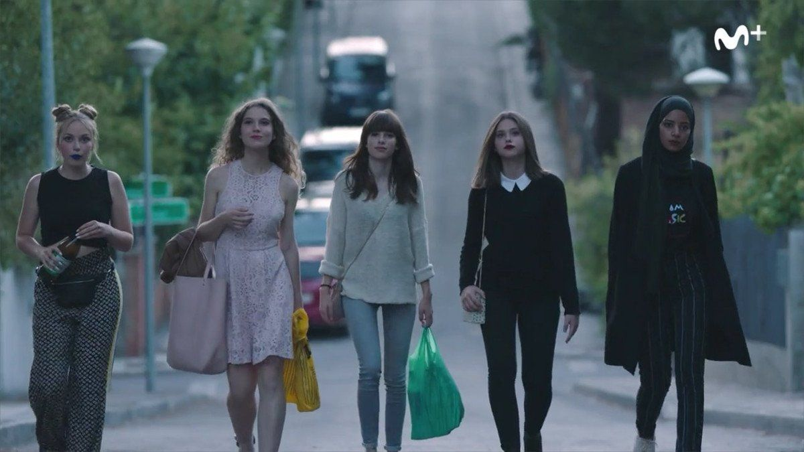
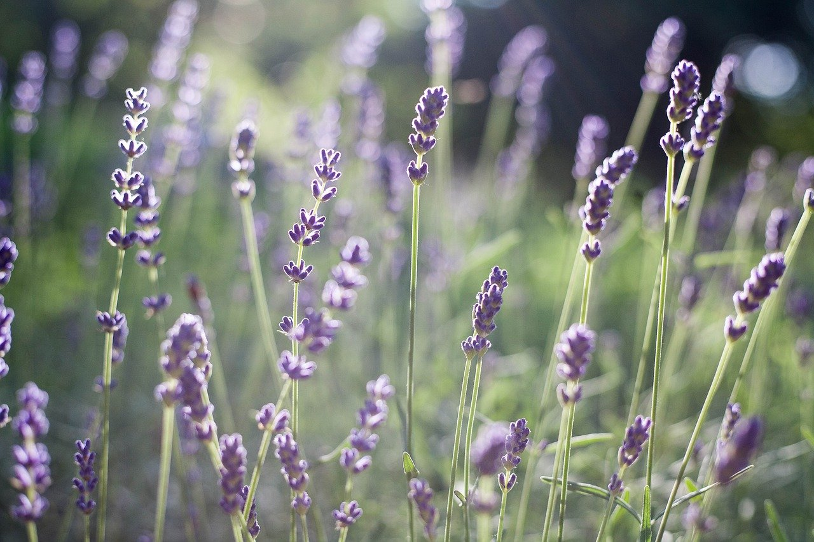

First Nested Tag
- About SKAM España seasons two and four.
Second Nested Tag
- Cris
- Season 2 protagonist
- Amira
- Season 4 protagonist
Third Nested Tag
| Character |
Season |
| Cris |
S.2 |
| Amira |
S.4 |
Fourth Nested Tag

Fig.2 - Main characters of SKAM

Fig.3 - Cris confronts a stranger on social media